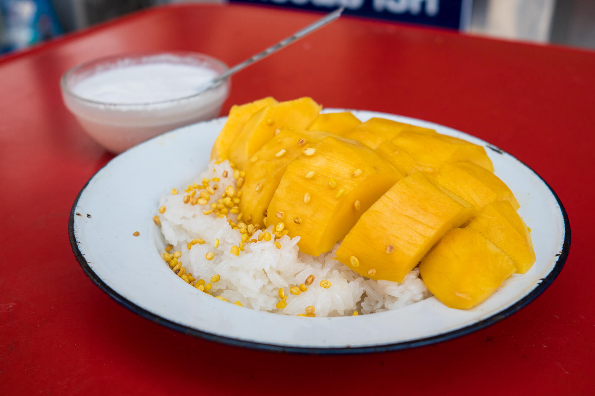

Mango Sticky Rice

Description
A probably really delicious dessert that I also hope to learn to make today!
Ingredients
- 1 kg. Thai sticky rice
- 800 ml. coconut cream
- 150 g. sugar
- 1 tsp salt
- sweet yellow mangoes
- 200 ml. coconut cream
- 1/3 tsp salt
Steps
- Rinse the sticky rice 6 - 10 times, making sure most of the starch gets removed and you're left with clear water. Then soak the rice submerged in water for about 6 hours.
- Using a steamer basket or other type of steamer, steam the sticky rice for about 15 minutes until fully cooked, then set aside.
- Put the fresh sticky rice into a mixing bowl, and begin to slowly add in the coconut cream and sugar mixture. You'll combine all of it, but add it spoon by spoon and work it slowly into the rice. Once all combined you should be left with shimmering sticky rice that's almost a grainy pudding in texture. Your sticky rice is ready, cover it with plaster so it doesn't get crusty.
- In a separate sauce pan add the other portion of coconut cream and salt, and stir on low heat. Bring it to a boil, then turn off the heat, and set aside in a bowl. This will be served alongside the mango sticky rice as a topping.
- In a wok or frying pan, using low heat, dry fry the yellow mung beans for a few minutes until they turn golden crispy. Again, set this aside as a topping.
- For the mango, first peel the skin, then cut off the meat from either side of the mango seed, and slice the mango into large bite sized pieces.
- On a plate, first add a portion of sticky rice, top it with mango, sprinkle on some mung beans, and serve the extra coconut cream on the side.